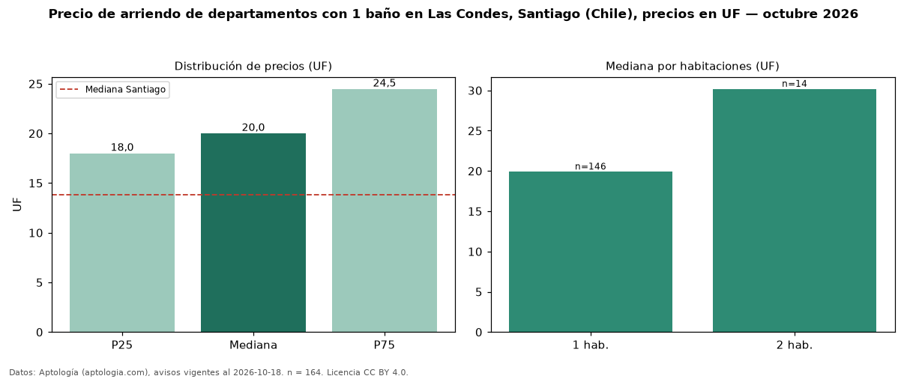

Precio de arriendo de departamentos con 1 baño en Las Condes, Santiago (Chile), precios en UF — octubre 2026
UF 20,00 al mes es el canon mediano de departamentos con 1 baño en arriendo en Las Condes, Santiago (Chile) (n = 164 avisos). Frente a la mediana de todos los departamentos en arriendo de Las Condes (UF 35,00, n = 630), queda 43 % por debajo; este segmento reúne el 26 % de esos avisos. Por metro cuadrado, la mediana es UF 0,47/m² al mes (n = 129), 17 % por encima del conjunto de referencia (UF 0,41/m²). El área mediana anunciada es 45 m². El segmento con más oferta es el de 1 habitación (146 avisos, mediana UF 19,91); pasar de 1 habitación a 2 habitaciones cambia la mediana +52 %. La mediana de todos los departamentos en arriendo de Santiago es UF 13,85 (+44 % de diferencia). La mitad central de los avisos va de UF 18,00 a UF 24,47 (razón 1,4), una dispersión baja. Datos: Aptología (aptologia.com), CC BY 4.0 — https://www.aptologia.com/cl/arriendo/santiago/las-condes. Archivos: PDF, CSV con las cifras y gráfica PNG.

| Avisos únicos | 164 |
|---|---|
| Percentil 25 | COP 18 |
| Mediana | COP 20 |
| Percentil 75 | COP 24 |
| Mediana por m² | COP 0 |
Fuente: avisos vigentes de portales inmobiliarios recopilados por Aptología, deduplicados (mínimo 30 avisos únicos por celda). Precios pedidos, no cerrados. Fecha: 2026-10-18.